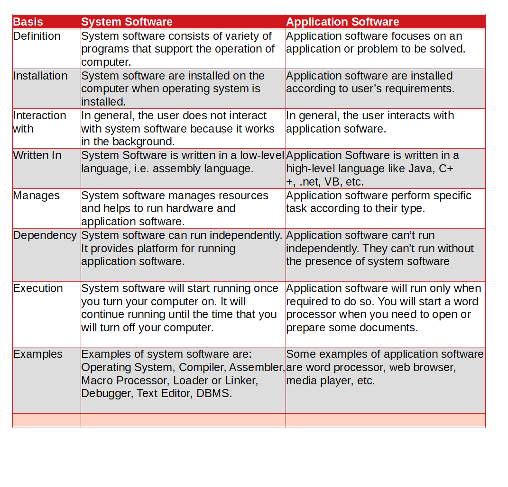

What is the main difference between RISC and CISC(RISC vs CISC)?
The main difference between RISC and CISC is RISC processors have simple instructions taking about one clock cycle whereas CSIC processor has complex instructions that take up multiple clocks for execution.
One of the other major differences between RISC and CISC architectures is the set of instructions that can access memory. A related issue that affects both RISC and CISC architectures is the choice of which addressing modes the architecture supports. Architecture's addressing modes are the set of syntaxes and methods that instructions use to specify a memory address, either as the target address of a memory reference or as the address that a branch will jump to.
There are two basic types of processor design philosophies: reduced instruction set computer(RISC) and complex instruction set computers(CISC). In the 1970s and 1980s, processors predominantly followed the CISC designs. The current trend is to use the RISC philosophy.
CISC
As the name suggests, CISC systems use complex instructions. What is a complex instruction? For example, adding two integers is considered to be a simple instruction. But, an instruction that copies an element from one array to another array and automatically updates both array subscripts is considered to be a complex instruction. RISC systems use only simple instructions. Furthermore RISC system assume that the required operands are in the processor's internal registers, not in the main memory.
A CISC design doesn't impose such restrictions. So What? It turns out that characterstics like simple instructions and restrictions like register-based operands not only simplify the processor design but also result in a processor that provides improved application performance.
RISC
RISC processor instruction set has a fixed length encoding of instructions and each instruction execute in a single clock cycle by hardwired implementation of each instruction. RISC architectures focus on reducing the number of instructions and working with simpler instruction sets having the limited number of addressing modes and allowing them to execute more instructions in the same amount of time. Program written for RISC architecture tend to take more space in memory but the RISC processor's increased clock rate allows it to execute its program in less time than a CISC processor takes to execute its program.
| Basis | RISC | CISC |
| Full Form | RISC stands for Reduced Instruction Set Computer. | CISC stands for Complex Instruction Set Computer. |
| Type of Instruction | RISC processors have simple instructions taking about one clock cycle. | CSIC processor has complex instructions that take up multiple clocks for execution. |
| Instruction Set | The instruction set is reduced i.e. it has only a few instructions in the instruction set. Many of these instructions are very primitive. | The instruction set has a variety of different instructions that can be used for complex operations. |
| Execution Time | In RISC Execution time is very less. | In CISC Execution time is very high. |
| Examples | The most common RISC microprocessors are Alpha, ARC, ARM, AVR, MIPS, PA-RISC, PIC, Power Architecture, and SPARC. | Examples of CISC processors are the System/360, VAX, PDP-11, Motorola 68000 family, AMD and Intel x86 CPUs. |
| Average Clock Cycle | The average clock cycle per instruction (CPI) is 1.5 in RISC | The average clock cycle per instruction (CPI) is in the range of 2 and 15 in CISC |
| Focus on | Software Centric Design | Hardware Centric Design |
| Memory Unit | It has no memory unit and uses a separate hardware to implement instructions. | It has a memory unit to implement complex instructions. |
| Register Set | Multiple Register Set | Single Register Set |
| RAM Requirement | RISC requires more RAM. | CISC requires minimum amount of RAM |

The amount of work accomplished per instruction
The original CISC philosophy was to do as much work per instruction as possible. Doing more work with fewer instructions meant that writing programs (in assembly language) was easier, and it was easier to write code generators for compilers.
RISC designs, on the other hand, attempt to perform only one operation per instruction. For this reason, it often takes two or more RISC instructions to do the same work as a single CISC instruction. As a result, RISC programs generally execute between 1.5 and 2.5 times as many instructions to do the same work as an equivalent program running on a CISC processor.
The size of an individual instruction
Most CISC designs use a variable instruction length, whereas RISC designs use fixed instruction lengths. Instructions on the 80x86, for example, range in length from 1 byte to 15 bytes. PowerPC instructions, on the other hand, are always 4 bytes long.
From a memory-usage point of view, CISC designs are more efficient than RISC designs. A well-designed CISC instruction set can pack more instructions into the same memory, thereby using less memory to hold the same number of instructions. Combined with the fact that those (smaller) instructions often do more work than individual RISC instructions, CISC processors usually have a big advantage over RISC processors when it comes to instruction density (that is, the number of instructions appearing in a given block of memory).
The clock speed and clock cycles per instruction
So far, it appears that the CISC design philosophy is the outright winner when comparing the two designs. CISC instructions do more work and, on the average, require less memory to do that work. All other things being equal, you might expect that programs running in a CISC processor would run faster than equivalent programs running on a RISC processor.
In fact, this assumption turns out to be false. The implicit assumption here is that all instructions take the same amount of time to execute, regard- less of their size and complexity. In the real world, and especially for CISC processors, complex instructions often take far longer to execute than simpler instructions. Indeed, the holy grail of RISC design has always been to reduce instruction execution time to one clock per instruction (CPI) or less.
The number of registers they provide, and the way they use those registers
Most CPUs perform intermediate calculations in registers and use registers to hold parameter and local variable values (to avoid accessing memory). The more registers you have, the more data a CPU can manipulate without accessing main memory. This is one area where RISC processors have a huge advantage over CISC processors. A typical RISC CPU, like the PowerPC, pro- vides 32 general-purpose registers, compared to the eight general-purpose registers found on a 32-bit 80x86 CPU. 1 As a result, RISC CPUs do not have to access memory anywhere near as often as the 80x86 CPU does. Because register access is much faster than memor access, having these extra registers helps RISC CPUs overcome the fact that many operations require the exe- cution of two or more RISC instructions to do the same work as one CISC instruction that can directly access memory
Immediate (Constant) Operands
RISC and CISC CPUs often vary considerably with respect to the type of immediate operands that instructions allow. CISC CPUs support variable- sized instructions that allow a program to specify 8-, 16-, 32-, and even 64-bit constant operands as part of a single instruction. 2 RISC processors only allow a single 32-bit instruction format and, therefore, cannot encode an instruc- tion opcode, destination register operand, and a large immediate constant into a single instruction. RISC CPUs, therefore, have to use two or more instructions to load large constant values into a register. This situation worsens as the instruction operands become larger (e.g., loading a 64-bit constant into a 64-bit variant of the PowerPC).